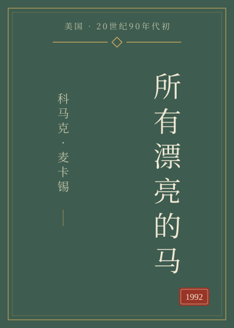

所有漂亮的马
一、基本信息
| 作者 | 科马克·麦卡锡 |
|---|---|
| 成书/出版 | 1992年（Britannica B328：All the Pretty Horses (1992)——'Won the National Book Award'） Cormac McCarthy — Encyclopaedia Britannica（百科全书） |
| 国别/地区 | 美国 |
| 时代 | 近代 · 20世纪90年代初 |
| 体裁 | 长篇小说 |
| 语言 | 英语 |
《所有漂亮的马》边境三部曲图（主题·结构图）
二、创作背景
Britannica（B328）：All the Pretty Horses——'Won the National Book Award and National Book Critics Circle Award'——'a coming-of-age story of John Grady Cole, a Texan who travels to Mexico'——'more Hemingway- than Faulkner-influenced in style'。
Britannica（B328）：'The Border Trilogy (1992-98)'——'rewrote and challenged myths of the American West'。
题材（通说待核）：16岁的约翰·格雷迪·科尔与同伴骑马赴墨西哥牧场。
三、内容脉络
（通说待核）德州少年的墨西哥牧场之梦与监狱之祸。
（通说待核）'边境三部曲'之首（B328）。
四、主要人物表
| 人物 | 身份 | 说明 |
|---|---|---|
| 约翰·格雷迪·科尔 | 16岁德州人 | （B328：John Grady Cole——'a Texan who travels to Mexico'） |
| 莱西·罗林斯 | 同伴 | （通说待核） |
五、主题与艺术特点
- 西部神话的改写（B328：Border Trilogy——rewrote and challenged myths）。
- 成长小说（B328：coming-of-age）。
- 海明威式文体（B328：more Hemingway- than Faulkner-influenced）。
六、影响与评论
- Britannica：National Book Award（B328）。
Cormac McCarthy — Encyclopaedia Britannica（百科全书） - Britannica：'brought McCarthy public fame'（B328）。
Cormac McCarthy — Encyclopaedia Britannica（百科全书）
七、阅读建议
难点
- 西班牙语对白。
- 西部边境史。
- 《所有漂亮的马》中译本（上海译文等——通说待核）。
- 英文原版。
麦卡锡大众入门；后接《穿越》《平原上的城市》。
八、待核实
- 约翰·格雷迪/莱西人名核对（B328载John Grady Cole）。
- 1992年出版（Knopf说）待核。
- '边境三部曲'卷次核对。